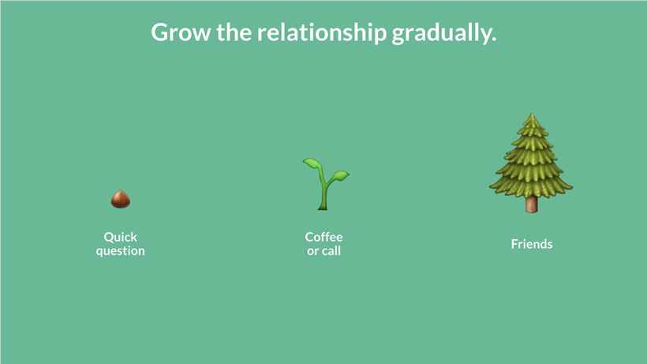

Chapter 50
By Jules Walter
Jules Walter is a product leader at YouTube. Previously, he led monetization at Slack and was a key contributor to Slack's 10X growth in his four years there. He serves on the boards of BlackProductManagers.com and CodePath.org, two organizations he co-founded to support underrepresented people in tech. Jules holds a computer science degree from MIT and an MBA from Harvard Business School.
twitter: @ julesdwalt
How Anyone Can Build Authentic Professional Relationships
Building a network is a common recommendation for career development. A strong network can help you access unique opportunities, and offer advice to help you grow and handle challenging situations. Yet, many people—especially introverts—struggle with networking because they feel they lack the mental energy, time, or know-how.
They sometimes have the perception that networking requires meeting more people than they can handle, or that the people they want to connect with are inaccessible.
Over time, I've learned to overcome those challenges and grow my own network in a way that is effective and feels authentic to me. Many friends and coworkers have asked me to share my approach, which relies on the principles below. These four principles will increase the likelihood that you create fruitful, long-term relationships with new people, and require a relatively low amount of effort.
1. Start with low-commitment interactions
Let's assume you've identified a potential mentor. For example, you meet a speaker at a conference. You believe you can learn from them and would like to stay in touch.
In new relationships, don't ask for too much too soon; this is a common mistake. Don't ask new contacts for coffee in your first interaction and never explicitly ask them to become your mentor. Instead, ask for their email and reach out within a day or so with a quick question they can answer via email, such as:
Hi Adam,
I loved the point you made yesterday about finding the heat for products. Do you have an example of a feature that wouldn't have existed without this approach?
Thanks,
Jules
With a quick question, they are less likely to ignore you. Once a new contact interacts with you, even with a short email, you have a foot in the door and can build a relationship from there.
Pick a cadence to regularly reach out to a new contact based on the person's availability—e.g., monthly or quarterly. After two or three interactions, new contacts will expect you to continue reaching out and will start seeing the interactions as the start of a relationship. It's human nature to invest in a relationship once you expect to consistently interact with a person in the future.
As you build trust and demonstrate that you're not wasting the person's time—through quick and thoughtful exchanges—then you can start asking for more time (e.g., coffee) or connect in more personal ways (e.g., Instagram).

3. Keep conversations specific and concrete
Don't ask busy people to "catch up." Be specific in your ask and provide a concrete topic or decision for them to offer input. For example:
Hi Lawrence,
I'm continuing to think of ways to be a great manager and would love your advice—e.g., how to coach, delegate effectively, manage my schedule and energy.
When's a good time to hop on a call?
Many thanks,
Jules
People often want to help, but have competing demands for their time. The more specific and concise your request, the more confidence they'll have that speaking with you is a good use of time.
4. Make the relationship mutually beneficial
For a relationship to last, you need to provide value to the other person, often in intangible ways. For example, let a mentor know how their previous advice helped you, which shows that time spent with you is impactful. It's only when I started mentoring others that I realized how much value I got out of just knowing how they used my advice.
Get to know a mentor's world and seek ways to help. I often leave a few minutes at the end of a conversation with a mentor to ask them what's on their mind and how I can help. These open-ended questions show genuine care and create unexpected opportunities to provide value.
With these four principles, I've been able to develop a great network that includes mentors and friends like Lawrence Ripsher, who encouraged me to write this post—we met a few years ago at an event. Let me know how this approach plays out for you. I hope it's as helpful to you as it has been to me.
This article was written by Jules Walter and reprinted with permission. 1
1 . Reprinted with permission from https://medium.com/@julesdwalt/networking-for-introverts-3544f4287fc1